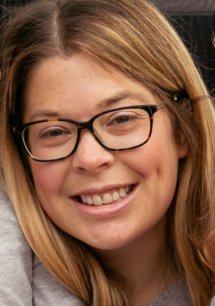

Vicki Greenwood

Summary
I am a hardworking and dedicated individual with experience in project management, analysis, design and reporting, from client facing roles. I am analytical and methodically driven.
Education
Masters in General Engineering - University of Oxford (2005-2008)
MEng First Class Honours
Work Experience
- Structural Engineer @ Ramboll Whitbybird / Ramboll.
Sept 2008 - June 2015
- Structural project design across a range of sectors and materials using hand calcs/sketches and technical software/cad resources.
- On-site surveys, load path determination, default assessment, progress inspections, contractor coordination.
- Job pricing, budgetting, reporting, presentations.
- Resource management and line management.
- Structures Project Manager @ Lendlease.
June 2015 - June 2023
- Management of construction projects with a structural specialism, from concept, through to design, procurement, construction, snagging and default assessments as needed.
- Project management and reporting at all stages.
- Producing and reviewing, as well as assessing the site status of:
- Risk assessments
- Quality Plans
- Inspection and Test Plans
- Short, medium and long term programmes
- Homemaker
June 2023 - present
- I have managed our family move from London to Yorkshire.
- Mum to two children who we have settled in to a new local school.
- All things homeowner, homemaker, parent, wife.
- Picking up on the coding skills I learnt at univeristy with courses on Python and Web Development.
Skills
- Project management: ⭐️⭐️⭐️⭐️⭐️
- Microsoft Office Suite: ⭐️⭐️⭐️⭐️
- Organizational skills: ⭐️⭐️⭐️⭐️
Awards and Certifications
- Chartered member of the Institution of Civil Engineers MEng MICE
Other
My Hobbies
Contact Me